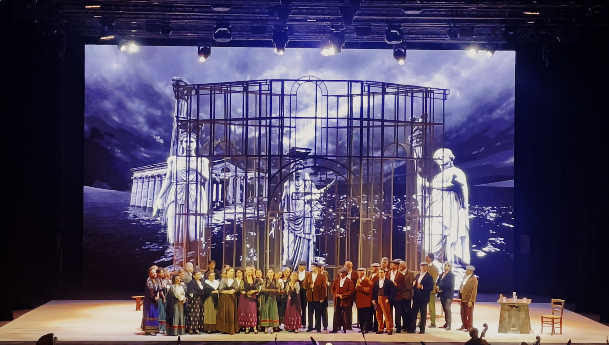
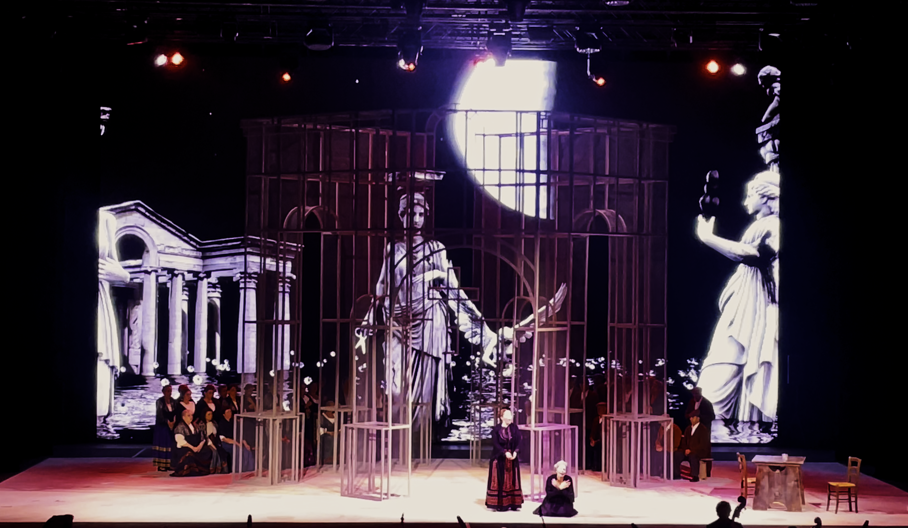
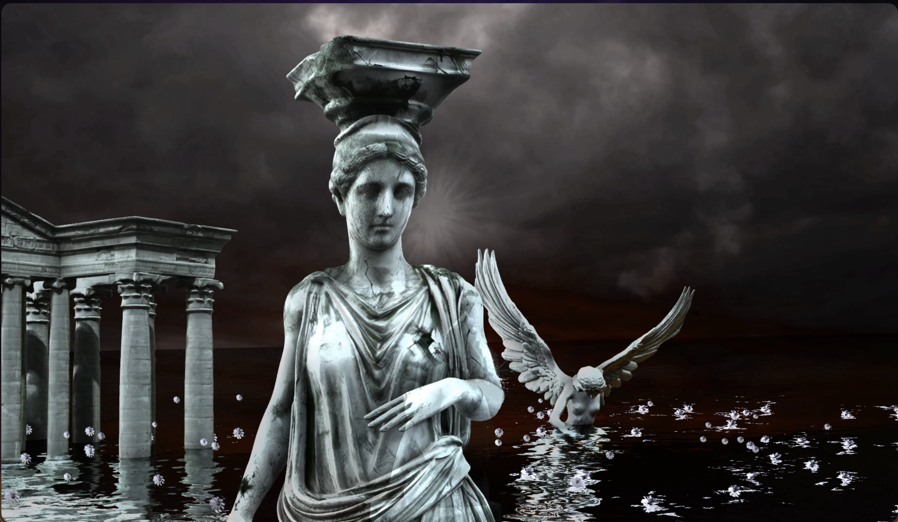
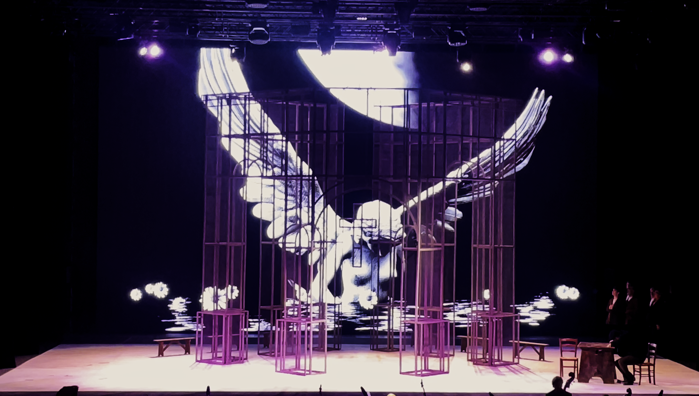
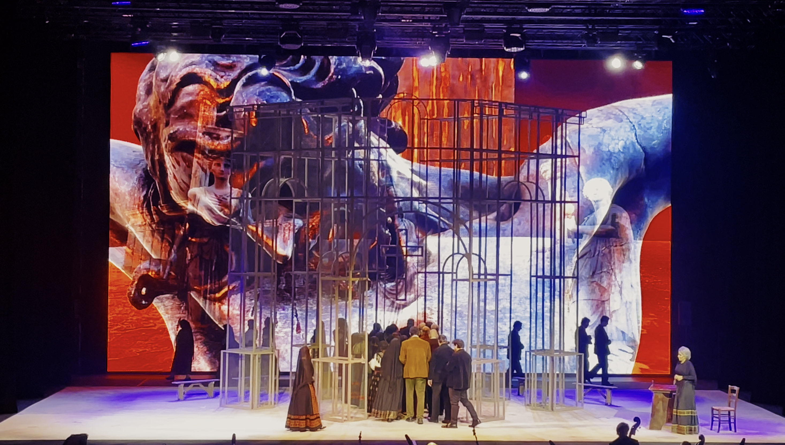
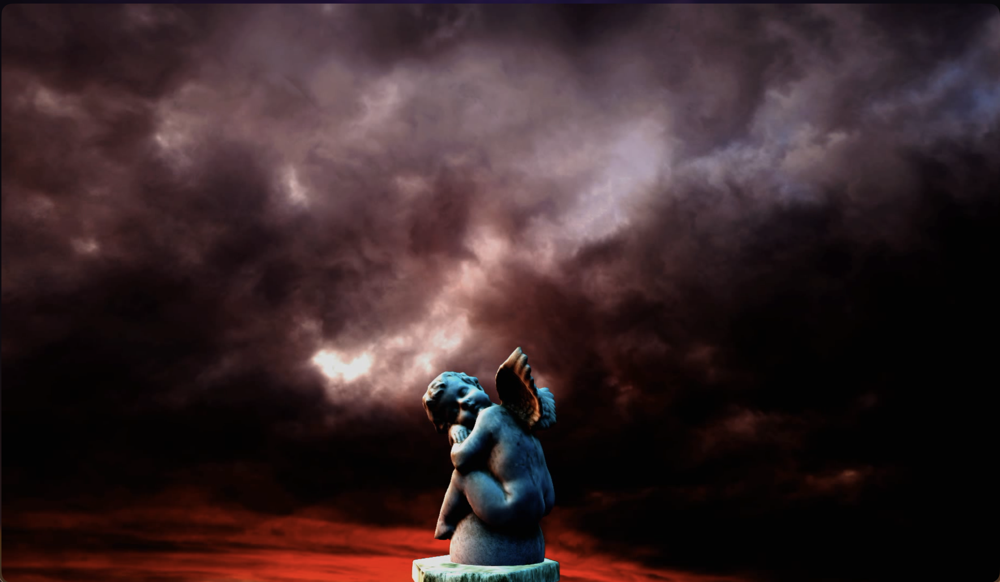

Cavalleria Rusticana
Ho lavorato come video scenographer per questa produzione.
Regia: Giandomenico Vaccari.
Video
Galleria






Note
Progetto di scenografia video sviluppato per l'opera Cavalleria Rusticana, con un impianto visivo pensato per accompagnare la drammaturgia musicale e il lavoro attoriale in scena.
La ricerca si concentra su ambienti digitali, texture luminose e composizioni dinamiche in grado di sostenere i cambi emotivi dell'opera, mantenendo una relazione diretta con il gesto scenico.
Cast & Crediti
Light Designer Massimiliano Calvetti
Direttrice di produzione Michela Fiorindi
Macchinisti Alberto Giorgetti, Marco Lemma